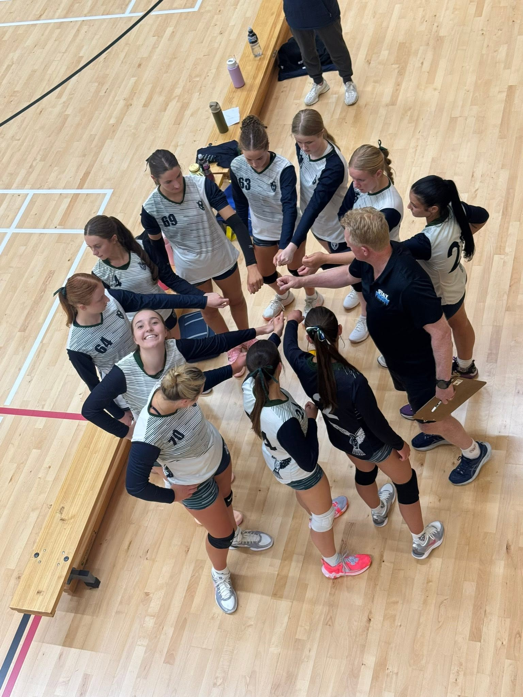
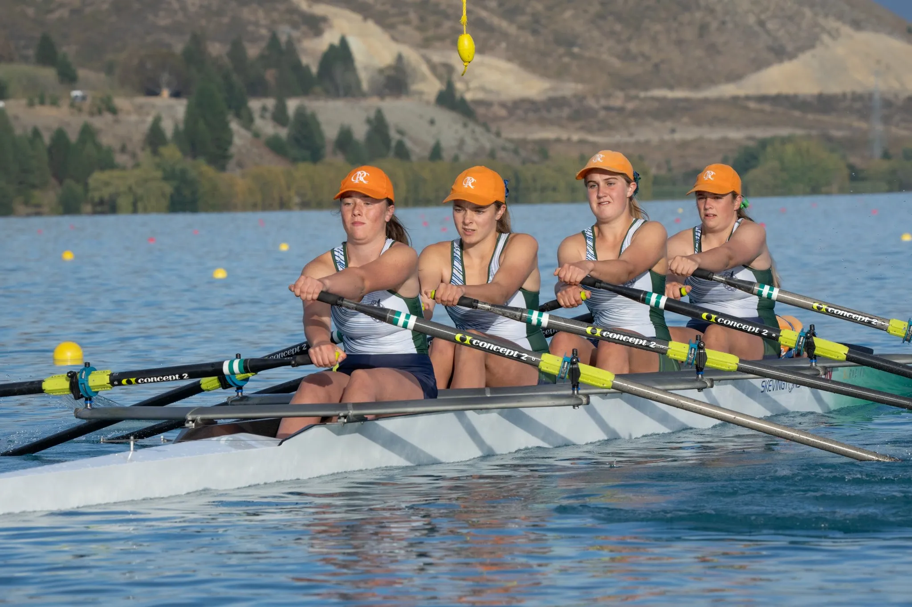
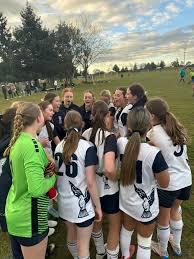

It is important to wear correct protective equipment when playing sports, as they are a crucial part of keeping you safe, and prevent injuries. Protective gear is there for a reason, which is why it is important to use it and follow sporting regulations.
Mouthguard - Mouthguards are used for a large variety of sports such as hockey, boxing, basketball and rugby. A mouthguard acts as a cushion to absorb shock, prevent tooth fractures, and shield your gums and jaw from injury.
Head Gear - Head gear is used for a variety of different reasons and sports. Head gear could be helmets such as in cricket and baseball, can be used in rugby to protect ears and can also be used for people who have had concussions or other health issues in the past such as concussion, which gives the head some extra shock absorption protection.
Shin guards/pads - These are used to protect shins from hard balls and being kicked. In some sports such as football, people often do not wear shinpads when they should. Shinpads prevent serious trauma and other shin related injuries.
Catch "Niggles" Early: Don't Wait for a Major Injury
It is incredibly common for youth athletes to ignore minor aches and pains, but waiting usually leads to serious, season ending injuries.


